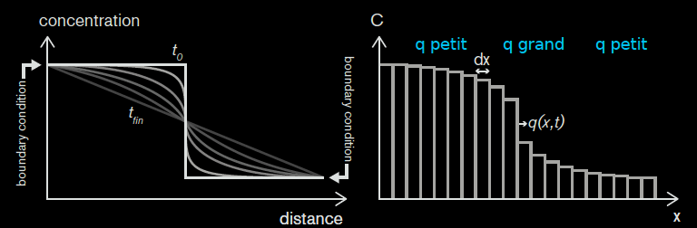
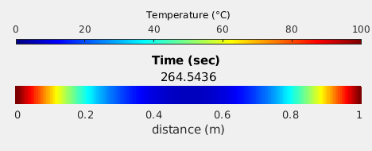

Cours 5#

Objectifs du cours#
Equation de diffusion de la température
Conditions de bords
Code multi-questions
Sauvegarde des résultats
Loi de Fick pour la concentration \(C\) (rappel)#
Le flux de particules q dépend de la dérivée de la concentration C En effet, plus la variation (dérivée) de concentration est grande, plus les particules vont se déplacer (rapidement), plus il y a de diffusion, cela se formalise avec $\(q = -D \frac{\partial C}{\partial x},\)$ ou D est le paramètre de diffusion.

Loi de Fourier pour la température \(T\) (nouveau)#
Le flux de température q dépend de la dérivée de la température T En effet, plus la variation (dérivée) de température est grande, plus la chaleur va se déplacer (rapidement), plus il y a de diffusion, cela se formalise avec
ou D est le paramètre de diffusion.

Equation de la diffusion thermique#
→ Loi de Fourier
→ Principe de conservation
Diffusivité thermique (\(m^2/s\)) de l’aluminium (0.0001), du béton (0.0000005), de l’eau (0.0000001), la glace (0.000001), …
Le modèle de diffusion est strictement le même que pour la concentration.
Discrétisation de la diffusion thermique#
Si on connait la température au temps précédent, on obtient la température au temps suivant en trois étapes comme pour la concentration:
→ 1) mettre à jour le flux en discrétisant : \(q = -D \frac{\partial T}{\partial x},\)
q = - D * ( T[1:] - T[:-1] ) / dx # taille nx-1
→ 2) mettre à jour dTdt en discrétisant: \(\frac{\partial T}{\partial t} = -\frac{\partial q}{\partial x},\)
dTdt = - ( q[1:] - q[:-1] ) / dx # taille nx-2
→ 3) mettre à jour la concentration.
T[1:-1] += dTdt * dt # taille nx-2
Les conditions de bords#
Si les équations décrivent la diffusion dans le domaine, il faut dire ce qui ce passe au bord du domaine via les conditions aux bords.
Condition de bord gauche Condition de bord droit
|------------------------------------------------------------|
Celles-ci peuvent influencer énormement la solution!
Deux catégories de conditions de bords#
du type “Dirichlet” → Fixe la concentration ou température sur les bords → Condition sur la fonction T ou C
du type “Neumann” → Fixe le flux de concentration ou température sur les bords → Condition sur la dérivée de T ou C
Condition de bords de Dirichlet#
→ Fixe la concentration ou température sur les bords
→ Condition sur la dérivée de T ou C, p.e.
0 1
|------------------------------------------------------------|
→ Dans le code, cela sera:
C[0] = a
C[-1] = b
Condition de bord de Neumann#
→ Fixe le flux / la dérivé de concentration ou température sur les bords
→ Condition sur la fonction T ou C, p.e.
0 1
|------------------------------------------------------------|
→ Dans le code, cela sera:
C[0] = C[1] - dt * a
C[-1] = C[-2] + dt * b
En effet \(\frac{dC}{dx}(0) = a\) se dicrétise \(\frac{C_1 - C_0}{dx} = a\), ce qui se ré-écrit \(C_0 = C_1 - a dx\).
Condition de flux nul (Neumann, cas spécial)#
→ Impose flux / dérivé nul(le) de concentration ou température sur les bords.
→ Condition sur la fonction T ou C, p.e. $\(\frac{dC}{dx}(0) = 0, \qquad\qquad\qquad\qquad \qquad\qquad\qquad\qquad\qquad\qquad \frac{dC}{dx}(1) =0\)$
0 1
|------------------------------------------------------------|
→ Dans le code, cela sera:
C[0] = C[1]
C[-1] = C[-2]
En effet \(\frac{dC}{dx}(0) = a\) se dicrétise \(\frac{C_1 - C_0}{dx} = 0\), ce qui se ré-écrit \(C_0 = C_1\).
Conditions de bords mixtes#
On peut avoir deux de conditions de bords différentes à gauche et à droite:
ou
Conditions de bords#
Les conditions de bords aggissent à tous moments, il faut donc les implémenter dans la boucle temporelle comme ceci:
# Initialisation
C = np.ones(nx)*1000
C[:int(nx/2)] = 0
# Boucle temporelle
for it in range(nt):
# Mise a jour condition equation de diffusion
q = - D * (C[1:] - C[:-1]) / dx
dCdt = - (q[1:] - q[:-1]) / dx
C[1:-1] += dCdt * dt
# Mise a jour condition de bords
C[0] = C[1]
C[-1] = C_right
Stabilité et pas de temps#
Comme pour la concentration, le pas de temps qui assure la stabilité de la méthode numérique est
Condition d’arrêt d’un modèle#
Souvent, nous voulons arrêter notre modèle lorsque celui-ci n’évolue plus significativement. Pour cela, nous comparons la solution actuelle avec l’ancienne afin de mesurer leur différence (p.e. avec la somme des valeurs absolues). Pour ce faire, nous faisons une copie de la solution avant de procéder à sa mise à jour:
T_old= np.copy(T)
Ensuite, nous pouvons arrêter le modèle après la mise à jour avec un break:
sum = np.sum(np.abs(T_old - T))
if sum < tol:
break
Notons qu’en Python, il est nécessaire de demander une copie via T_old = np.copy(T), puisque la commande T_old = T ne le fera pas, car T_old sera modifié lorsque T sera mis à jour (Python copie par défaut des “adresses”).
Code avec plusieurs variantes#
Souvent, nous créons un code contenant plusieurs variantes (pour les différentes questions). Pour cela, il est pratique d’utiliser une variable q comme suit :
q = 1 # Paramètre indiquant la question 1 ou 2 à définir au début du code
if q == 1:
ft = 600 # Paramètre de la question 1
elif q == 2:
ft = 90 # Paramètre de la question 2
Le but est de ne construire un nouveau code (qui est quasiment identique à l’original), mais de ne modifier que le bout de code sujet à modification.
→ Cela rend votre rendu / code bien plus concis